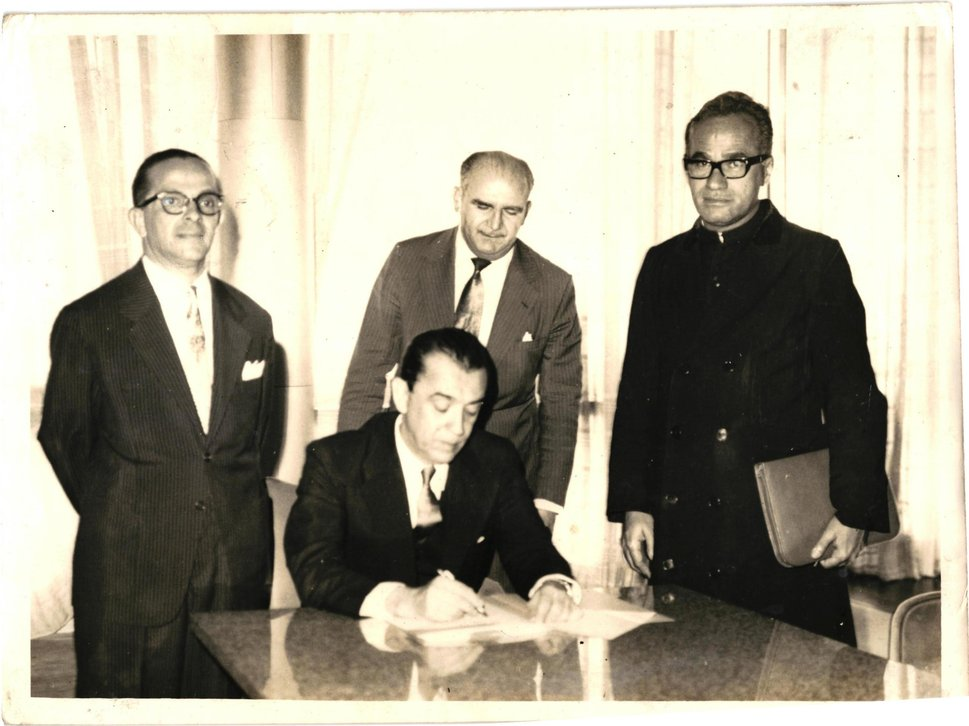

Maceió, 25 de janeiro de 1961 — Lei nº 3.867
Nasce a maior universidade de Alagoas
A Universidade Federal de Alagoas foi criada em 25 de janeiro de 1961, por ato do então presidente Juscelino Kubitschek, por meio da Lei nº 3.867.
A decisão reuniu em uma única instituição federal as faculdades isoladas que já existiam no estado. Anos depois, nos anos 1970, a universidade se consolidou com a implantação de dezenas de cursos e a construção da Cidade Universitária.
Com o plano de Expansão e Interiorização, a UFAL chegou ao interior: Campus Arapiraca (2006) — com unidades em Palmeira dos Índios, Penedo e Viçosa — e Campus do Sertão, em Delmiro Gouveia e Santana do Ipanema.
Fonte: ufal.br/ufal/institucional/apresentacao
